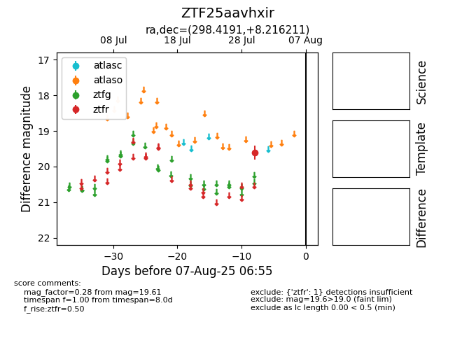

Target ZTF25aavhxir at 2025-08-07 07:30, see:
FINK: fink-portal.org/ZTF25aavhxir
Lasair: lasair-ztf.lsst.ac.uk/objects/ZTF25aavhxir
ALeRCE: alerce.online/object/ZTF25aavhxir
alt names
ZTF25aavhxir (ztf,fink)
coordinates:
equatorial (ra, dec) = (298.4191,+8.21621)
galactic (l, b) = (47.5255,-9.85276)
photometry
last ztfr=19.61
1 ztfr detections
